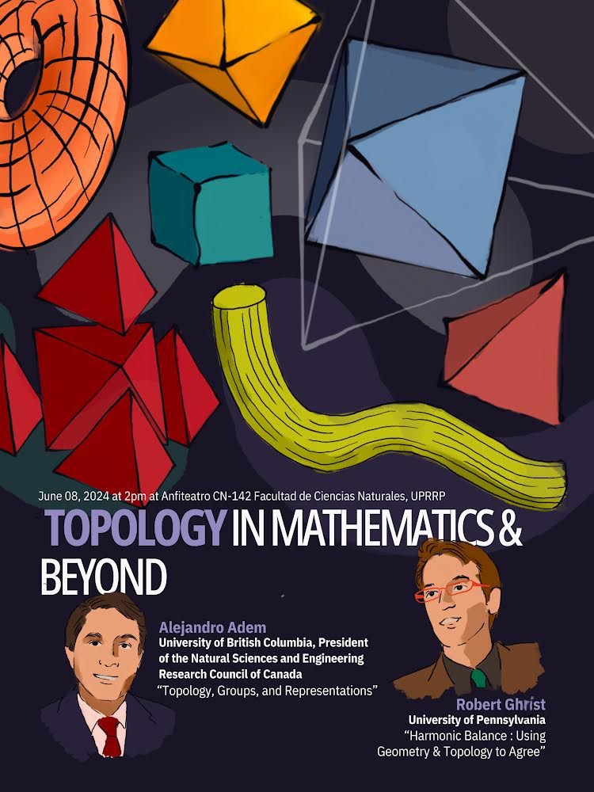

Topology in mathematics and beyond
June 8, 2024, 2:00 pm
Anfiteatro CN-142 Facultad de Ciencias Naturales
University of Puerto Rico, Río Piedras Campus

This is a public event, part of the Algebraic structures in topology conference series, directed towards the general academic community featuring two talks discussing the role of topology and geometry in mathematics, science, and society. Here is short introductory article about field of topology mentioning the work of one of the speakers: Topology 101: The Hole Truth.
Speakers
Alejandro Adem (President of Natural Sciences and Engineering Research Council of Canada, University of British Columbia)
Robert Ghrist (Andrea Mitchell University Professor at the University of Pennsylvania)
Location and Transportation
The event will take place at the Anfiteatro CN-142 in the Facultad de Ciencias Naturales, University of Puerto Rico Río Piedras Campus. We will provide transportation from the AC Hotel Condado at 1:00pm.
Titles and abstracts
Alejandro Adem
Topology, Groups, and Representations
In this lecture we will discuss how methods from algebraic topology can be successfully applied to shed light on fundamental questions related to symmetries and representation theory. We will start with basic invariants such as the Euler characteristic and explore applications to topological space forms, spaces of representations and connections to mathematical physics. This will be illustrated with a variety of examples, ending with some open problems.
Robert Ghrist
Harmonic Balance: Using Geometry & Topology to Agree
What does it mean to "agree to disagree"? Is that possible?
What happens when people communicate over social media
and have different viewpoints? This talk will approach issues
of balancing forces in tension using the beauty of topology and
geometry. There is harmonic convergence in all types of information
systems, whether physical, economic, or even social. This talk
will converge to some deep mathematical ideas, but in a fun and
gentle manner that requires very little background in math besides
an active imagination and a bit of matrix algebra.
Organizers
Manuel Rivera (Purdue), Iván Cardona (UPR-RP), Ralph Kaufmann (Purdue), Mona Merling (UPenn), Jeremy Miller (Purdue), and Natalia Pacheco-Tallaj (MIT)
Contact
For more information contact the organizers at: algtoppr at gmail dot com
Sponsors
Institute of Mathematical Sciences of the Americas at the University of Miami(IMSA)